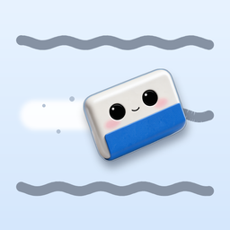

고객 지원 · Support
알림 · 개인정보 처리방침이 2026년 11월 13일에 바뀌었어요. 앱 안 공지를 받는 '공지 받기'와 공지에서 신청하는 '무료 이용 신청' 항목을 더했어요. 공지를 받을 때는 이용자에 대한 정보를 보내지 않아요. 지금 방침 · 이전 방침
Notice · Our Privacy Policy changed on November 13, 2026: we added 'Notices' and 'Applying for free access'. No information about you is sent when the app gets notices. Current policy · Previous policy
お知らせ・プライバシーポリシーは2026年11月13日に変わりました。アプリ内のお知らせの受け取りと、お知らせからの無料利用の申し込みについての項目を加えました。お知らせを受け取るとき、利用者に関する情報は送信しません。現在のポリシー・以前のポリシー
公告 · 隱私權政策已於 2026 年 11 月 13 日 變更：加入了「接收公告」與「申請免費使用」項目。取得公告時，不會傳送任何關於你的資訊。目前的政策 · 先前的政策
어떤 문제집에 잘 맞나요?
서술형·그림 문제에 연필로 쓴 풀이, 빨간펜 채점 표시, 색연필로 그린 그림과 밑줄을 잘 지워요.
필기가 조금 남았어요.
결과 화면에서 편집을 누르고 지우개로 남은 자국 위를 문지르면 바로 지워져요. 두 손가락으로 크게 보면서 칠하면 더 깔끔해요.
인쇄된 글자가 같이 지워졌어요.
편집에서 복원을 고르면 지워진 부분이 파랗게 보여요. 되살릴 글자 위를 문지르면 원래대로 돌아와요. 원본 보기를 누르고 있으면 찍은 사진과 비교할 수 있어요.
무료 10장은 어떻게 세나요?
필기 지우기에 성공한 장만 세요. 실패한 장은 세지 않아요. 예전에 지운 사진이라도 다시 가져오면 새 장으로 세요. 결과를 편집하거나 인쇄·저장하는 것은 무료예요.
찍은 뒤에 영역을 바꿀 수 있나요?
스캐너 화면 왼쪽 아래의 사진을 누르면 찍은 장마다 영역을 조정할 수 있어요. 지우기를 시작한 뒤에는 바꿀 수 없으니, 시작하기 전에 확인해 주세요.
구독을 해지하거나 복원하려면요?
앱의 설정 > 구독 관리에서 해지할 수 있어요. iPhone의 설정 > 내 이름 > 구독, 안드로이드의 Google Play > 프로필 > 결제 및 정기 결제 > 정기 결제에서도 할 수 있어요. 기기를 바꿨다면 설정 > 구매 내역 복원을 눌러 주세요.
사진이 서버로 전송되나요?
아니요. 사진은 휴대폰 안에서만 처리되고 밖으로 나가지 않아요. 사진을 처리하는 서버는 없고, 회원가입 없이 쓸 수 있어요. 밖으로 보내는 것은 익명의 월별 제품 개선 통계(설정에서 끌 수 있어요)와, 직접 로그인했을 때만 내 필통 기록 백업이에요. 자세한 내용은 개인정보 처리방침에 있어요.
화면 캡처가 되지 않아요.
앱 화면은 캡처와 화면 녹화에 담기지 않아요. 결과는 인쇄·저장에서 인쇄하거나 PDF, 앨범으로 저장할 수 있어요.
그 밖의 문제가 있어요.
아래 메일로 휴대폰 모델, iOS·안드로이드 버전, 어떤 상황이었는지 알려 주세요.
Which workbooks does it work best on?
Pencil working on word and picture problems, red-pen grading marks, and colored-pencil drawings and underlines are removed well.
Some handwriting is left.
Tap Touch Up on the result and paint over it with the Eraser. Zoom in with two fingers for fine work.
Printed text was erased too.
In Touch Up choose Restore. Erased areas show in blue; paint over them to bring them back. Hold Original to compare with your photo.
How are the 10 free pages counted?
Only pages that were erased successfully count; failed pages don't. A photo you erased before counts again if you add it again. Touching up, printing and saving are always free.
Cancel or restore a subscription
Use Settings > Manage subscription in the app, iPhone Settings > your name > Subscriptions, or on Android Google Play > Profile > Payments & subscriptions > Subscriptions. On a new device, tap Settings > Restore purchases.
Are my photos uploaded?
No. Photos are processed only on your phone and never leave it. There is no server that processes photos, and no account is needed. The only things sent are anonymous monthly product-improvement statistics (you can turn them off in Settings) and, only if you sign in yourself, your pencil case progress backup. See the privacy policy.
Screenshots come out blank.
The app's screens are excluded from screenshots and screen recordings by design. Print or save results from Print · Save.
Something else is wrong.
Email us with your phone model, iOS or Android version and what happened.
どんな問題集に向いていますか？
記述問題・図の問題に鉛筆で書いた解き方、赤ペンの採点マーク、色鉛筆で描いた絵や下線を消すのが得意です。
書き込みが少し残りました。
結果の画面で手直しを押し、消しゴムで残った跡の上をこすると、すぐに消えます。2本指で拡大しながら塗ると、よりきれいになります。
印刷された文字も一緒に消えてしまいました。
手直しで復元を選ぶと、消えた部分が青く表示されます。戻したい文字の上をこすると元に戻ります。元画像を見るを押している間は、撮った写真と見比べられます。
無料の10枚はどう数えますか？
書き込みの消去に成功したページだけを数えます。失敗したページは数えません。前に消した写真でも、もう一度読み込むと新しい1枚として数えます。結果の手直しや印刷・保存は無料です。
撮ったあとで範囲を変えられますか？
スキャナー画面の左下の写真を押すと、撮ったページごとに範囲を調整できます。消去を始めたあとは変更できないので、始める前に確認してください。
サブスクリプションを解約・復元するには？
アプリの設定 > サブスクリプションを管理から解約できます。iPhoneの設定 > ユーザ名 > サブスクリプション、AndroidのGoogle Play > プロフィール > お支払いと定期購入 > 定期購入からも行えます。端末を変えた場合は、設定 > 購入を復元を押してください。
写真はサーバーに送信されますか？
いいえ。写真はスマートフォンの中だけで処理され、外に出ることはありません。写真を処理するサーバーはなく、会員登録なしで使えます。外に送るのは、匿名の月ごとの製品改善の統計（設定でオフにできます）と、ご自身でサインインした場合だけのマイふでばこの記録のバックアップです。詳しくはプライバシーポリシーをご覧ください。
画面キャプチャができません。
アプリの画面は、スクリーンショットや画面収録に写らないようになっています。結果は印刷・保存から印刷したり、PDFや写真に保存したりできます。
そのほかの問題があります。
下記のメールアドレスに、スマートフォンの機種、iOS・Androidのバージョン、どのような状況だったかをお知らせください。
適合哪些習題？
擅長擦除文字題、圖形題中用鉛筆寫的解題過程、紅筆批改記號，以及用色鉛筆畫的圖和底線。
還留下一點筆跡。
在結果畫面按修整，再用橡皮擦在留下的痕跡上塗抹，就能馬上擦掉。用兩指放大後再塗，會更乾淨。
印刷的字也被一起擦掉了。
在修整中選擇恢復，被擦掉的部分會顯示為藍色。在要找回的字上塗抹，就會回到原本的樣子。按住查看原圖，可以和拍攝的照片比較。
免費的 10 張怎麼計算？
只計算成功擦除筆跡的張數，失敗的不計算。以前擦過的照片如果再次匯入，也會算成新的一張。修整結果、列印和儲存都是免費的。
拍完後可以更改範圍嗎？
點掃描畫面左下角的照片，就能逐張調整範圍。開始擦除後就不能更改，請在開始前確認。
想取消或回復訂閱怎麼辦？
可以在 App 的設定 > 管理訂閱中取消。也可以在 iPhone 的設定 > 你的名稱 > 訂閱項目，或 Android 的Google Play > 個人資料 > 付款和訂閱 > 訂閱中取消。如果換了裝置，請按設定 > 回復購買項目。
照片會傳送到伺服器嗎？
不會。照片只在手機上處理，不會離開手機。沒有處理照片的伺服器，也不必註冊會員就能使用。會傳送出去的，只有匿名的每月產品改善統計（可以在設定中關閉），以及只在你自己登入時才會傳送的鉛筆盒紀錄備份。詳細內容請見隱私權政策。
無法截圖。
App 畫面不會出現在截圖和螢幕錄影中。結果可以在列印／儲存中列印，或儲存為 PDF、存到相簿。
遇到其他問題。
請寄信到下方的電子郵件，告訴我們手機型號、iOS 或 Android 版本，以及當時的狀況。